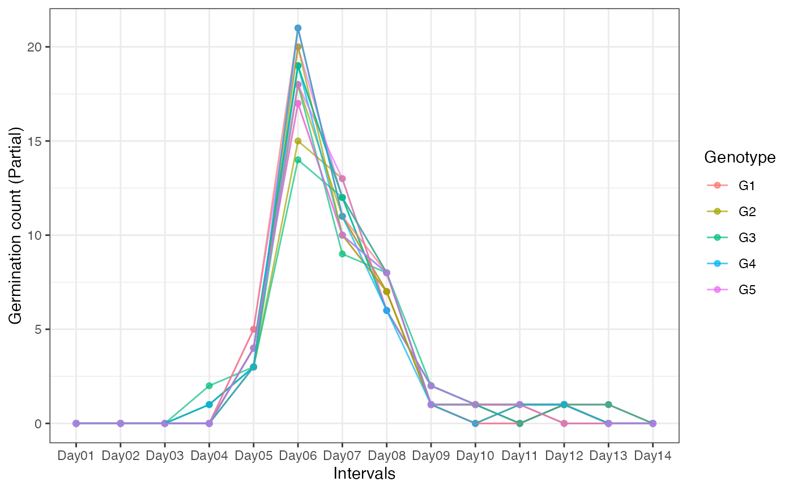
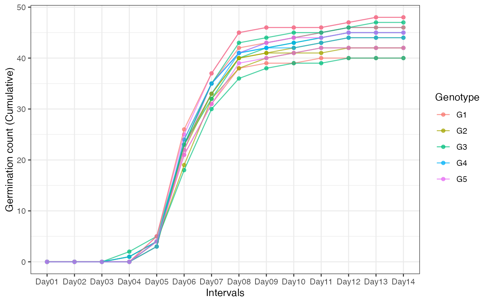

An example germination count dataset. It includes germination count data over 14 days from five genotypes (G1 to G5) in three replications
Format
A data frame with 17 columns:
- Genotype
The genotype.
- Rep
Replication.
- Day01
Number of seeds that germinated (germination counts) on Day 1.
- Day02
Number of seeds that germinated (germination counts) on Day 2.
- Day03
Number of seeds that germinated (germination counts) on Day 3.
- Day04
Number of seeds that germinated (germination counts) on Day 4.
- Day05
Number of seeds that germinated (germination counts) on Day 5.
- Day06
Number of seeds that germinated (germination counts) on Day 6.
- Day07
Number of seeds that germinated (germination counts) on Day 7.
- Day08
Number of seeds that germinated (germination counts) on Day 8.
- Day09
Number of seeds that germinated (germination counts) on Day 9.
- Day10
Number of seeds that germinated (germination counts) on Day 10.
- Day11
Number of seeds that germinated (germination counts) on Day 11.
- Day12
Number of seeds that germinated (germination counts) on Day 12.
- Day13
Number of seeds that germinated (germination counts) on Day 13.
- Day14
Number of seeds that germinated (germination counts) on Day 14.
- Total Seeds
Total number of seeds tested.
Examples
# \donttest{
data(gcdata)
library(ggplot2)
library(reshape2)
# Plot partial germination counts over time
#----------------------------------------------------------------------------
# Convert wide-from to long-form
gcdatamelt <- melt(gcdata[, !names(gcdata) %in% c("Total Seeds")],
id.vars = c("Genotype", "Rep"))
ggplot(gcdatamelt, aes(x = variable, y = value,
group = interaction(Genotype, Rep),
colour = Genotype)) +
geom_point(alpha = 0.7) +
geom_line(alpha = 0.7) +
ylab("Germination count (Partial)") +
xlab("Intervals") +
theme_bw()

# Plot partial germination counts over time
#----------------------------------------------------------------------------
# Convert wide-from to long-form
# Compute cumulative germination counts
gcdata2 <- gcdata
gcdata2[, !names(gcdata2) %in% c("Genotype", "Rep", "Total Seeds")] <-
t(apply(gcdata2[, !names(gcdata2) %in% c("Genotype", "Rep", "Total Seeds")], 1, cumsum))
gcdatamelt2 <- melt(gcdata2[, !names(gcdata2) %in% c("Total Seeds")],
id.vars = c("Genotype", "Rep"))
ggplot(gcdatamelt2, aes(x = variable, y = value,
group = interaction(Genotype, Rep),
colour = Genotype)) +
geom_point(alpha = 0.7) +
geom_line(alpha = 0.7) +
ylab("Germination count (Cumulative)") +
xlab("Intervals") +
theme_bw()

# Compute germination indices
#----------------------------------------------------------------------------
counts.per.intervals <- c("Day01", "Day02", "Day03", "Day04", "Day05",
"Day06", "Day07", "Day08", "Day09", "Day10",
"Day11", "Day12", "Day13", "Day14")
germination.indices(gcdata, total.seeds.col = "Total Seeds",
counts.intervals.cols = counts.per.intervals,
intervals = 1:14, partial = TRUE, max.int = 5)
#> Genotype Rep Day01 Day02 Day03 Day04 Day05 Day06 Day07 Day08 Day09 Day10
#> 1 G1 1 0 0 0 0 4 17 10 7 1 0
#> 2 G2 1 0 0 0 1 3 15 13 6 2 1
#> 3 G3 1 0 0 0 2 3 18 9 8 2 1
#> 4 G4 1 0 0 0 0 4 19 12 6 2 1
#> 5 G5 1 0 0 0 0 5 20 12 8 1 0
#> 6 G1 2 0 0 0 0 3 21 11 7 1 1
#> 7 G2 2 0 0 0 0 4 18 11 7 1 0
#> 8 G3 2 0 0 0 1 3 14 12 6 2 1
#> 9 G4 2 0 0 0 1 3 19 10 8 1 1
#> 10 G5 2 0 0 0 0 4 18 13 6 2 1
#> 11 G1 3 0 0 0 0 5 21 11 8 1 0
#> 12 G2 3 0 0 0 0 3 20 10 7 1 1
#> 13 G3 3 0 0 0 0 4 19 12 8 1 1
#> 14 G4 3 0 0 0 0 3 21 11 6 1 0
#> 15 G5 3 0 0 0 0 4 17 10 8 1 1
#> Day11 Day12 Day13 Day14 Total Seeds GermPercent PeakGermPercent
#> 1 1 0 0 0 50 80.00000 34.00000
#> 2 0 1 0 0 51 82.35294 29.41176
#> 3 1 1 0 0 48 93.75000 37.50000
#> 4 1 1 0 0 51 90.19608 37.25490
#> 5 0 1 1 0 50 96.00000 40.00000
#> 6 1 1 0 0 49 93.87755 42.85714
#> 7 1 0 0 0 48 87.50000 37.50000
#> 8 0 1 0 0 47 85.10638 29.78723
#> 9 1 1 0 0 52 86.53846 36.53846
#> 10 0 1 0 0 50 90.00000 36.00000
#> 11 0 1 1 0 51 94.11765 41.17647
#> 12 1 1 0 0 51 86.27451 39.21569
#> 13 0 1 1 0 49 95.91837 38.77551
#> 14 1 1 0 0 48 91.66667 43.75000
#> 15 1 0 0 0 48 87.50000 35.41667
#> FirstGermTime LastGermTime PeakGermTime TimeSpreadGerm t50_Coolbear
#> 1 5 11 6 6 5.970588
#> 2 4 12 6 8 6.192308
#> 3 4 12 6 8 6.333333
#> 4 5 12 6 7 6.041667
#> 5 5 13 6 8 5.975000
#> 6 5 12 6 7 5.976190
#> 7 5 11 6 6 5.972222
#> 8 4 12 6 8 6.208333
#> 9 4 12 6 8 6.310345
#> 10 5 12 6 7 6.076923
#> 11 5 13 6 8 5.928571
#> 12 5 12 6 7 5.975000
#> 13 5 13 6 8 6.083333
#> 14 5 12 6 7 5.928571
#> 15 5 11 6 6 6.050000
#> t50_Farooq MeanGermTime VarGermTime SEGermTime CVGermTime MeanGermRate
#> 1 5.941176 6.700000 1.446154 0.1901416 0.1794868 0.1492537
#> 2 6.153846 6.857143 2.027875 0.2197333 0.2076717 0.1458333
#> 3 5.972222 6.866667 2.572727 0.2391061 0.2335882 0.1456311
#> 4 6.225806 6.891304 2.187923 0.2180907 0.2146419 0.1451104
#> 5 5.950000 6.812500 2.368351 0.2221275 0.2259002 0.1467890
#> 6 5.952381 6.869565 2.071498 0.2122088 0.2095140 0.1455696
#> 7 5.944444 6.690476 1.389663 0.1818989 0.1761967 0.1494662
#> 8 6.166667 6.875000 2.112179 0.2297923 0.2113940 0.1454545
#> 9 5.973684 6.866667 2.300000 0.2260777 0.2208604 0.1456311
#> 10 6.038462 6.822222 1.831313 0.2017321 0.1983606 0.1465798
#> 11 5.904762 6.791667 2.381206 0.2227295 0.2272072 0.1472393
#> 12 5.950000 6.886364 2.149577 0.2210295 0.2129053 0.1452145
#> 13 6.041667 6.936170 2.539315 0.2324392 0.2297410 0.1441718
#> 14 5.904762 6.772727 1.900634 0.2078370 0.2035568 0.1476510
#> 15 6.259259 6.809524 1.670151 0.1994129 0.1897847 0.1468531
#> VarGermRate SEGermRate CVG GermRateRecip_Coolbear
#> 1 0.0007176543 0.004235724 14.92537 0.1674877
#> 2 0.0009172090 0.004673148 14.58333 0.1614907
#> 3 0.0011572039 0.005071059 14.56311 0.1578947
#> 4 0.0009701218 0.004592342 14.51104 0.1655172
#> 5 0.0010995627 0.004786184 14.67890 0.1673640
#> 6 0.0009301809 0.004496813 14.55696 0.1673307
#> 7 0.0006935558 0.004063648 14.94662 0.1674419
#> 8 0.0009454531 0.004861721 14.54545 0.1610738
#> 9 0.0010345321 0.004794747 14.56311 0.1584699
#> 10 0.0008453940 0.004334343 14.65798 0.1645570
#> 11 0.0011191581 0.004828643 14.72393 0.1686747
#> 12 0.0009558577 0.004660905 14.52145 0.1673640
#> 13 0.0010970785 0.004831366 14.41718 0.1643836
#> 14 0.0009033254 0.004531018 14.76510 0.1686747
#> 15 0.0007767634 0.004300508 14.68531 0.1652893
#> GermRateRecip_Farooq GermSpeed_Count GermSpeed_Percent
#> 1 0.1683168 6.138925 12.27785
#> 2 0.1625000 6.362698 12.47588
#> 3 0.1674419 6.882179 14.33787
#> 4 0.1606218 6.927417 13.58317
#> 5 0.1680672 7.318987 14.63797
#> 6 0.1680000 6.931782 14.14649
#> 7 0.1682243 6.448449 13.43427
#> 8 0.1621622 6.053175 12.87909
#> 9 0.1674009 6.830592 13.13575
#> 10 0.1656051 6.812698 13.62540
#> 11 0.1693548 7.342796 14.39764
#> 12 0.1680672 6.622258 12.98482
#> 13 0.1655172 7.052320 14.39249
#> 14 0.1693548 6.706782 13.97246
#> 15 0.1597633 6.363925 13.25818
#> GermSpeedAccumulated_Count GermSpeedAccumulated_Percent
#> 1 34.61567 69.23134
#> 2 35.54058 69.68741
#> 3 38.29725 79.78594
#> 4 38.68453 75.85202
#> 5 41.00786 82.01571
#> 6 38.77620 79.13509
#> 7 36.38546 75.80304
#> 8 33.77079 71.85275
#> 9 38.11511 73.29829
#> 10 38.19527 76.39054
#> 11 41.17452 80.73436
#> 12 37.00640 72.56158
#> 13 39.29399 80.19182
#> 14 37.69490 78.53103
#> 15 35.69697 74.36868
#> GermSpeedCorrected_Normal GermSpeedCorrected_Accumulated WeightGermPercent
#> 1 0.1534731 0.8653917 47.42857
#> 2 0.1514928 0.8462043 47.89916
#> 3 0.1529373 0.8510501 54.46429
#> 4 0.1505960 0.8409680 52.24090
#> 5 0.1524789 0.8543303 56.14286
#> 6 0.1506909 0.8429608 54.51895
#> 7 0.1535345 0.8663205 51.93452
#> 8 0.1513294 0.8442698 49.39210
#> 9 0.1517909 0.8470024 50.27473
#> 10 0.1513933 0.8487837 52.57143
#> 11 0.1529749 0.8578026 55.18207
#> 12 0.1505059 0.8410547 50.00000
#> 13 0.1500494 0.8360424 55.24781
#> 14 0.1524269 0.8567022 53.86905
#> 15 0.1515220 0.8499278 51.19048
#> MeanGermPercent MeanGermNumber TimsonsIndex TimsonsIndex_Labouriau
#> 1 5.714286 2.857143 8.000000 1.00
#> 2 5.882353 3.000000 9.803922 1.25
#> 3 6.696429 3.214286 14.583333 1.40
#> 4 6.442577 3.285714 7.843137 1.00
#> 5 6.857143 3.428571 10.000000 1.00
#> 6 6.705539 3.285714 6.122449 1.00
#> 7 6.250000 3.000000 8.333333 1.00
#> 8 6.079027 2.857143 10.638298 1.25
#> 9 6.181319 3.214286 9.615385 1.25
#> 10 6.428571 3.214286 8.000000 1.00
#> 11 6.722689 3.428571 9.803922 1.00
#> 12 6.162465 3.142857 5.882353 1.00
#> 13 6.851312 3.357143 8.163265 1.00
#> 14 6.547619 3.142857 6.250000 1.00
#> 15 6.250000 3.000000 8.333333 1.00
#> TimsonsIndex_KhanUngar GermRateGeorge GermIndex GermIndex_mod
#> 1 0.5714286 4 5.840000 7.300000
#> 2 0.7002801 5 5.882353 7.142857
#> 3 1.0416667 7 6.687500 7.133333
#> 4 0.5602241 4 6.411765 7.108696
#> 5 0.7142857 5 6.900000 7.187500
#> 6 0.4373178 3 6.693878 7.130435
#> 7 0.5952381 4 6.395833 7.309524
#> 8 0.7598784 5 6.063830 7.125000
#> 9 0.6868132 5 6.173077 7.133333
#> 10 0.5714286 4 6.460000 7.177778
#> 11 0.7002801 5 6.784314 7.208333
#> 12 0.4201681 3 6.137255 7.113636
#> 13 0.5830904 4 6.775510 7.063830
#> 14 0.4464286 3 6.625000 7.227273
#> 15 0.5952381 4 6.291667 7.190476
#> EmergenceRateIndex_SG EmergenceRateIndex_SG_mod
#> 1 292 7.300000
#> 2 300 7.142857
#> 3 321 7.133333
#> 4 327 7.108696
#> 5 345 7.187500
#> 6 328 7.130435
#> 7 307 7.309524
#> 8 285 7.125000
#> 9 321 7.133333
#> 10 323 7.177778
#> 11 346 7.208333
#> 12 313 7.113636
#> 13 332 7.063830
#> 14 318 7.227273
#> 15 302 7.190476
#> EmergenceRateIndex_BilbroWanjura EmergenceRateIndex_Fakorede PeakValue
#> 1 5.970149 8.375000 9.500000
#> 2 6.125000 8.326531 9.313725
#> 3 6.553398 7.324444 10.416667
#> 4 6.675079 7.640359 10.049020
#> 5 7.045872 7.096354 11.250000
#> 6 6.696203 7.317580 10.714286
#> 7 6.277580 7.646259 10.416667
#> 8 5.818182 8.078125 9.574468
#> 9 6.553398 7.934815 9.855769
#> 10 6.596091 7.580247 10.250000
#> 11 7.067485 7.216146 11.029412
#> 12 6.389439 7.981921 9.803922
#> 13 6.776074 7.231326 10.969388
#> 14 6.496644 7.388430 10.677083
#> 15 6.167832 7.782313 10.156250
#> GermValue_Czabator GermValue_DP GermValue_Czabator_mod GermValue_DP_mod
#> 1 54.28571 57.93890 54.28571 39.56076
#> 2 54.78662 52.58713 54.78662 40.99260
#> 3 69.75446 68.62289 69.75446 53.42809
#> 4 64.74158 70.43331 64.74158 48.86825
#> 5 77.14286 80.16914 77.14286 56.23935
#> 6 71.84506 76.51983 71.84506 53.06435
#> 7 65.10417 69.41325 65.10417 47.37690
#> 8 58.20345 56.00669 58.20345 43.67948
#> 9 60.92165 58.13477 60.92165 45.30801
#> 10 65.89286 70.91875 65.89286 49.10820
#> 11 74.14731 77.39782 74.14731 54.27520
#> 12 60.41632 64.44988 60.41632 44.71582
#> 13 75.15470 78.16335 75.15470 54.94192
#> 14 69.90947 74.40140 69.90947 51.41913
#> 15 63.47656 67.62031 63.47656 46.48043
#> CUGerm GermSynchrony GermUncertainty
#> 1 0.7092199 0.2666667 2.062987
#> 2 0.5051546 0.2346109 2.321514
#> 3 0.3975265 0.2242424 2.462012
#> 4 0.4672113 0.2502415 2.279215
#> 5 0.4312184 0.2606383 2.146051
#> 6 0.4934701 0.2792271 2.160545
#> 7 0.7371500 0.2729384 2.040796
#> 8 0.4855842 0.2256410 2.357249
#> 9 0.4446640 0.2494949 2.321080
#> 10 0.5584666 0.2555556 2.187983
#> 11 0.4288905 0.2686170 2.128670
#> 12 0.4760266 0.2737844 2.185245
#> 13 0.4023679 0.2506938 2.241181
#> 14 0.5383760 0.2991543 2.037680
#> 15 0.6133519 0.2497096 2.185028
# }